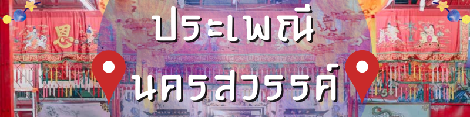
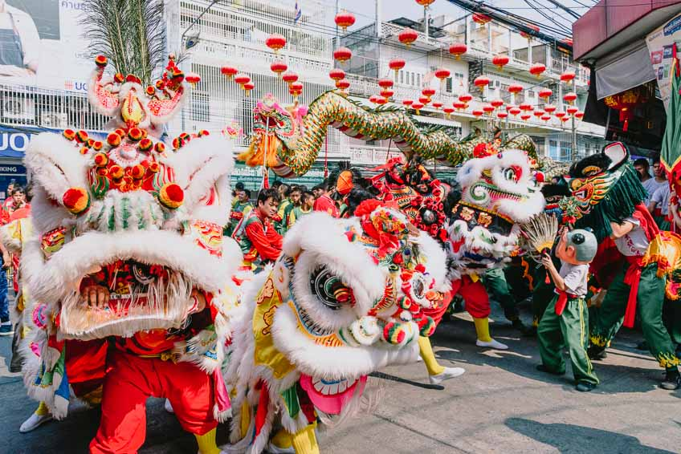
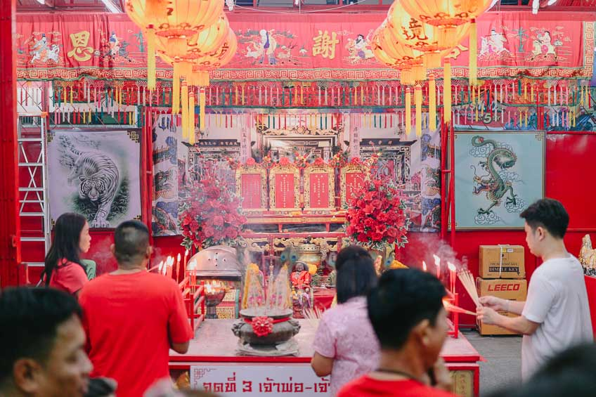
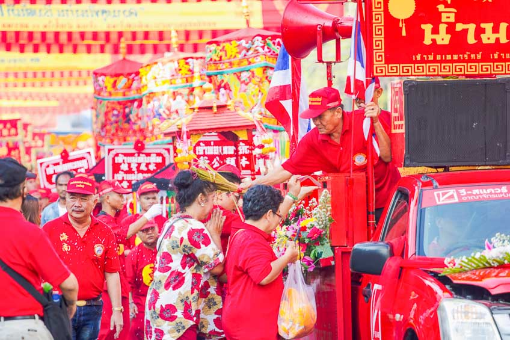

|
 |
 |
 |
 |

ตรุษจีน
งานประเพณียิ่งใหญ่ แห่เจ้าพ่อ เจ้าแม่ปากน้ำโพ
ตรุษจีนในนครสวรรค์ ตรงกับวันขึ้น 1 ค่ำ เดือน 1 ตามปฏิทินจีน เป็นประเพณีเกี่ยวกับการไหว้เจ้า ไหว้บรรพบุรุษ ของคนไทยเชื้อสายจีน ที่อยู่ในอำเภอเมืองนครสวรรค์
จังหวัดนครสวรรค์ มีกิจกรรมการแสดงหลายอย่าง เช่น การแห่เจ้าพ่อ-เจ้าแม่ปากน้ำโพ แห่มังกร เชิดสิงโต

การแห่เจ้าพ่อ – เจ้าแม่ปากน้ำโพ เป็นประเพณีที่กล่าวเป็นวัฒนธรรมท้องถิ่นของจังหวัดนครสวรรค์ซึ่งปฏิบัติสืบเนื่องกันมา การแห่เจ้าพ่อ – เจ้าแม่ปากน้ำโพเริ่มครั้งแรกเมื่อใดไม่ปรากฏหลักฐานชัดเจนจากคำบอกเล่าของผู้อาวุโสของชาวไหหนำ คุณเตียงตุ่น แช่ภู่ ว่าการแห่เจ้ามีมาก่อนที่จะเกิดโรคระบาด โดยสมัยก่อนแห่ทางน้ำใช้เวลาในการแห่ 2 วัน โดยอัญเชิญรูปจำลองเจ้าพ่อเทพารักษ์ – เจ้าพ่อกวนอู – เจ้าแม่ทับทิม ประทับบนเกี้ยว แล้วนำลงเรือบรรทุกข้าวหรือเรือบรรทุกไม้ ล่องไปทางตลาดใต้ บ้านตากุ๋ย แล้วอัญเชิญกลับศาล วันที่สองจะทำการแห่ขึ้นไปทางเหนือทางสถานีรถไฟ ขบวนแห่จะมีเฉพาะองค์เจ้าและพะโหล่วต่อมาเมื่อการคมนาคมทางบกสะดวกจึงได้อัญเชิญออกแห่รอบตลาดปากน้ำโพ และได้นำเอาศิลปวัฒนธรรมของชาวไหหนำ คือการเชิดเสือพะโหล่ว สาวงามถือโบ้ยโบ้ (อาวุธเจ้า) ไซกี่ (ธง) และมาร่วมในขบวน
ตำนาน ความเชื่อ งานตรุษจีน นครสวรค์
ความศักดิ์สิทธิ์ของเจ้าพ่อแควใหญ่

ในช่วงเทศกาลตรุษจีนของนครสวรรค์ จะมี ขบวนแห่เจ้าพ่อเจ้าแม่ปากน้ำโพ ทุกปีต่อเนื่องกันมาแต่โบราณ จนกลายเป็นประเพณีสืบทอดกันมากกว่า 100 ปี อีกทั้งยังมีความเชื่อของชาวบ้าน ในเรื่องของการแสดงความขอบคุณเทพเจ้า ที่เกี่ยวกับงานประเพณี เพื่อให้เกิดความเป็นสิริมงคล ความเจริญก้าวหน้า ในด้านการค้า การเคารพกราบไหว้ อีกทั้งยังเปรียบเสมือนเทพเจ้า ได้มาให้พร ตามสถานที่ ร้านค้าต่างๆ ซึ่งเป็นแหล่งทำมาหากินของชาวเมืองนั่นเอง

นอกจากนี้ ในช่วงปี พ.ศ.2460-2462 ที่นครสวรรค์ได้เกิดโรคอหิวาตกโรคระบาดอย่างรุนแรง ทำให้ประชาชนล้มตายเป็นจำนวนมาก และไม่สามารถรับมือกับโรคระบาดได้เพราะการแพทย์ที่ยังไม่เจริญเท่าที่ควร
ในครั้งนั้น เจ้าพ่อแควใหญ่ หรือ เจ้าพ่อเทพารักษ์ ได้ประทับทรง ทำพิธีรักษาโรคด้วยการเขียน “ฮู้” หรือ ยันต์กระดาษ ให้ชาวบ้านพกติดตัว หรือปิดยันต์ไว้ที่หน้าบ้าน และได้นำฮู้ไปเผา เพื่อทำน้ำมนต์ให้ชาวบ้านได้ดื่มกิน อีกทั้งยังนำมาประพรมไปรอบตลาด และเป็นผลให้โรคระบาดทุเลาลง และหายไปในที่สุด ทำให้เกิดแรงศรัทธามากราบไหว้เจ้าพ่อแควใหญ่เพราะความศักดิ์สิทธิ์